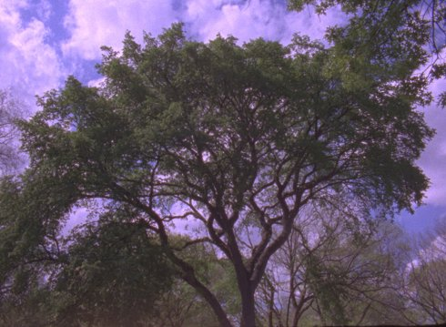

The Tree

Henry Hills
|
AT
/ US 2019
|
Dienstag 15 okt | 20.30 | werkstattkino | short film
night
Ein Porträt der edlen Ulme, die sich in der Mitte des Tompkins Square Park im New Yorker East Village befindet, bekannt als „Hare Krishna Ulme”. Unter diesem Baum wurde 1966 im Beisein von Allen Ginsberg die Hare-Krishna-Bewegung gegründet.
Henry Hills macht seit 1975 Experimentalfilme. Im New Yorker East Village arbeitete er mit dem Komponisten John Zorn und der Choreographin Sally Silvers zusammen. Seit 2005 ist er Gastprofessor an der FAMU in Prag. Hills lebt aktuell in Wien. |
Filme Porter Springs 2 1976 | Notes on Marie Menken 2006 | Failed States 2008 | Arcana 2011 | Fragements of Kubelka 2012 | The Falls 2019 | The Tree 2019 |